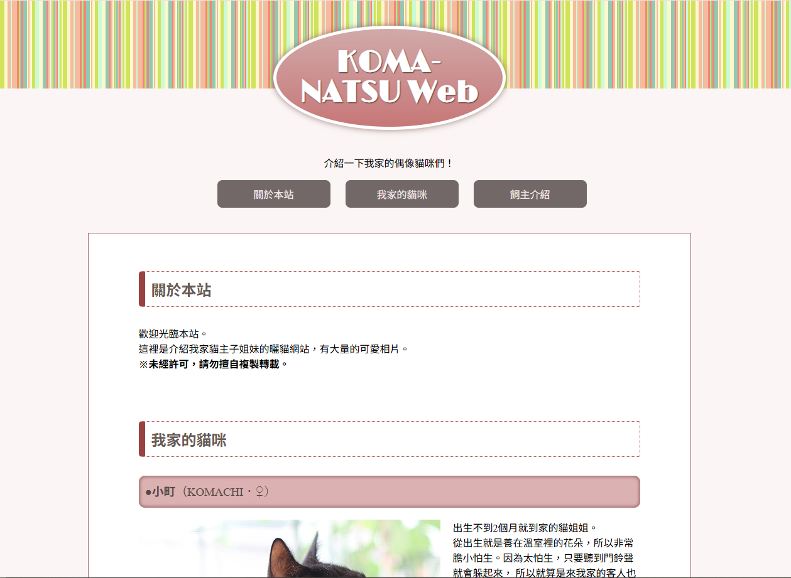
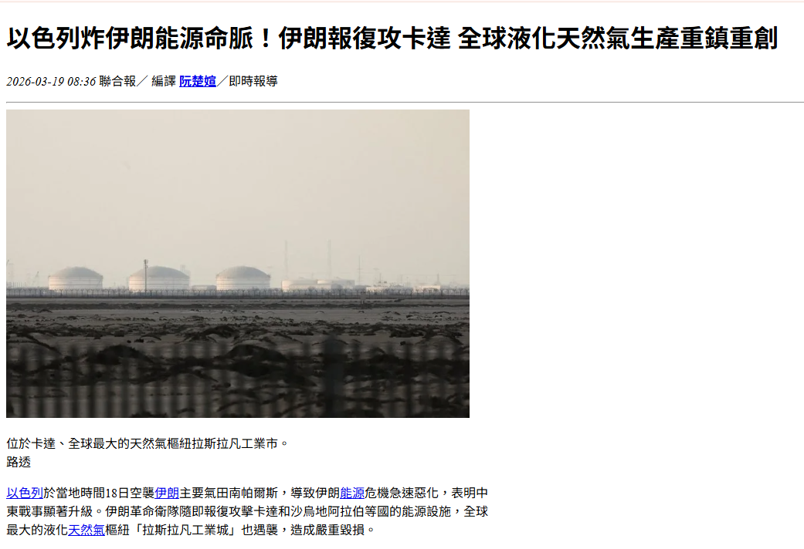
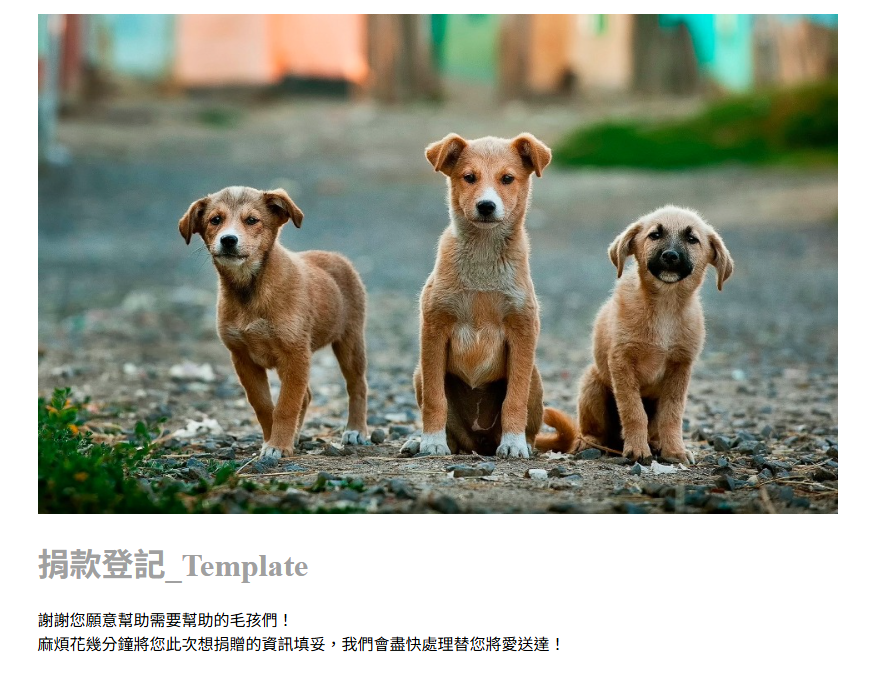
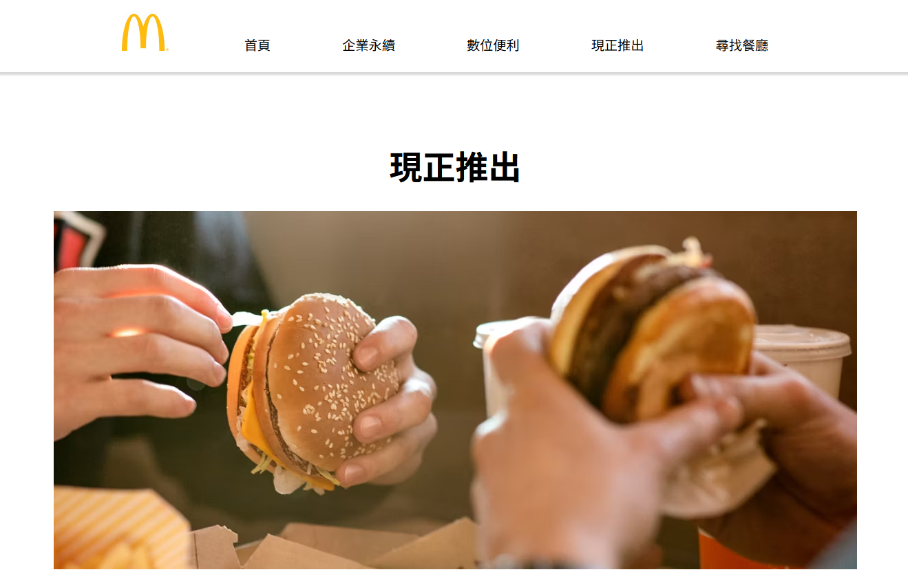

偶像貓咪介紹網站

這是一個貓咪主題的網頁練習，透過 HTML 建立網頁內容與版面結構，利用 CSS 美化介面、調整色彩與排版，讓網頁看起來更美觀。網頁中展示了貓咪的圖片與相關介紹，並透過網頁設計的實作，學習如何建立基本網站架構以及前端開發的技巧。
新聞排版練習

本次新聞排版練習使用 HTML 與 CSS 製作新聞網頁版面，模擬真實新聞網站的標題、內文、圖片及版面配置。透過調整字體、間距、欄位與色彩設計，學習網頁排版技巧，提升資訊呈現的清晰度與閱讀體驗。
捐款登記網站

本次練習製作了一個捐款登記網頁，使用 HTML 建立表單欄位，讓使用者可以輸入姓名、聯絡方式、捐款金額等資料，並利用 CSS 美化介面與排版。透過表單設計與資料輸入流程的實作，學習網頁表單製作與基本前端開發技巧。
麥當勞網站

本次我以麥當勞為主題製作了一個網頁，作為網頁設計的練習作品。在製作過程中，我使用 HTML 建立網站的基本架構，並利用 CSS 與 Bootstrap 進行版面設計與美化。網頁內容包含麥當勞的簡介、餐點介紹與圖片展示，並運用 Card 元件來呈現不同餐點資訊，使畫面更整齊清楚。同時也使用 Grid System 來規劃整體版面配置，讓網頁在不同裝置上都能正常顯示。